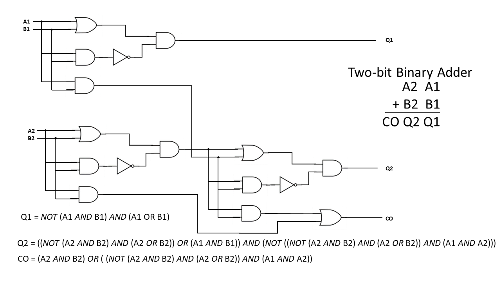

Logika: Programming Logics
2. Circuits and Truth Tables
2. Circuits and Truth Tables¶
In this chapter, we review basic notions about gates and learn the relationship between circuits and assignment-based computer programs. This sets the stage for analyzing modern programs.
2.1. Gates and Truth Tables¶
Here are the four basic gates:
P AND Q |
P OR Q |
NOT P |
P IMPLY Q |
In the above drawings, the input wires are labelled with the names P and
Q.
The output that is computed is emitted from the rightmost wire which exits the
gate. For these simple gates, it is possible to exhaustively test every permutation
of potential inputs and summarize results in a table, called a truth table.
Let’s examine the AND gate. The AND gate emits a high voltage (1) exactly
when high voltages are sensed at input wires P and Q; otherwise
low voltage (0) is emitted. The gate’s physical behavior is summarized by
in the following table.:
AND: P Q |
------------
1 1 | 1
1 0 | 0
0 1 | 0
0 0 | 0
For the remainder of this course, we will use T (read “true”) for 1 and
F (read “false”) for 0.
This is because we will examine applications that go far beyond circuit theory
and base-two arithmetic.
Here are the truth tables for the AND, OR, NOT and IMPLY gates:
{kind=link}
Note
The capital letters P and Q are intended to be place holders, not variables strictly named P and Q. Their use avoids the verbose, “Right-hand Side Operand” and “Left-hand Side Operand”.
OR is sometimes called “inclusive or”, because as long as one of its inputs is true, then its output is true. This differs from common United States English usage. Generally in spoken and written English, “or” carries the exclusive connotation. If offered a choice of “coffee or tea,” it is understood that you may select one but not both. The logical “or” is admits the possibility of both. It is more accurately translated into the English language as “and/or”.
The meaning of the IMPLY gate will be covered latter in this chapter. It is included here so all the gate information is consolidated.
It is standard to write each gate in a linear notation, that is, instead of
drawing , we write P ∧ Q.
(The tradition of writing linear notations to represent two-dimensional
structures goes back centuries in physics and math.)
The notations are as follows (the traditional math notations are provided for
your reference.)
Gate |
ASCII |
Math |
UNICODE |
AND |
∧ |
∧ |
|
OR |
v |
∨ |
|
NOT |
~ |
¬ |
|
IMPLY |
-> |
⇒ |
|
These notes will typically use the UNICODE notations.
We can also compose the gates to define new operations.
For example, this circuit,  written
written ¬ (P ∧ Q), defines this
computation of outputs:
P Q | ¬ (P ∧ Q)
--------------
T T | F
T F | T
F T | T
F F | T
which we can work out in stages, like this:
{kind=link}
We begin by writing the value of each set of inputs on the left, under their
corresponding symbol on the right. Next we apply the operator (gate) with the
highest precedence (covered in Logical Operator Precedence below). In our case
the “()” make the AND (∧) symbol the highest.
A truth assignment is a unique permutation of the possible inputs for a system. For the ∧-gate, it is a 2-variable sequence. Considering the first row we see we have ” T ∧ T”–looking that up in the ∧-gate truth table we see the result is also “T”, and we record that under the “∧” symbol. We do the same thing all the other truth assignments.
After the initial transcribing of the truth values under their respective variables, we look up the truth-values in the gate tables, not the variables. Also observe that while ∧ is symmetric, i.e. “T F” == “F T” == “F” the IMPLY gate is not.
Now we look up the value under the “∧” symbol in the ¬ gate table. In the first row we see that the truth assignment for the first row, “T”, is “F” and record it under the “¬” symbol. Do this for every row and we are done.
2.1.1. Characterizing Truth Tables¶
In our study of logic, it will be convenient to characterize logical formula with
a description of their truth tables. If all truth assignments for a logical formula
are True, the formula is said to be a tautology. The formula p ∨ ¬ p is a
tautology. In the following example, the * marks the top level or last
evaluated operator.
1 2 3 4 5 6 7 8 | *
------------
p | p ∨ ¬ p
------------
T | T T F T
F | F T T F
------------
Tautology
|
A formula for which every truth assignment is False is called contradictory. The
formula p ∧ ¬ p is contradictory (or a contradiction).
1 2 3 4 5 6 7 8 | *
------------
p | p ∧ ¬ p
------------
T | T F F T
F | F F T F
------------
Contradictory
|
A formula for which some truth assignments are False and other’s True is called
contingent. The equation p q | ¬ (q ∧ q), from above is contingent.
In this section, we have used Logika truth tables. They are explained in more detail below. In this class, if you produce a truth table as part of an answer, it must match the Logika syntax.
2.1.2. Truth Tables as Proofs¶
This is a class about logic. As such, much the class will involve formally proving some claim is always true, never true, or true only under certain conditions. Many types of “computing” problems can be expressed as truth tables.
Consider the simple 2-bit integer adder.
{kind=link}
While it has a lot of parts (three “answer” tables, each with 2^2 truth assignments), it is certainly feasible (although irritating) to calculate these tables by hand. But recall, that most integers are represented by 32-bits, leading to 33 tables (don’t forget the Carry-Over or Overflow bit), each with 2^32 entries. This will take a bit (pun intended) over a 1,100-years to write out by hand if you can average one truth assignment per second.
Considering you will probably never be asked to write a real-world application as simple as integer addition, it is easy to conclude that it is infeasible to prove the correctness of programs by truth tables. The inability to test a program by exhaustively testing every input or state is known as the combinatorial explosion problem.
OKay … then why are we making you learn truth tables? Well, even when more advanced techniques are applied to prove logical statements, underling the techniques’ soundness are these primitive rules which are easily expressed and learned via truth tables.
2.2. Logika Truth Tables¶
From this point forward, the course will expect you to use Logika formatted
truth tables. The Logika truth table for the formula ¬ (P ∧ Q) is:
1 2 3 4 5 6 7 8 | *
------------
p | p ∨ ¬ p
------------
T | T T F T
F | F T T F
------------
Tautology
|
Logika truth tables have standard format (syntax) and semantic meanings. All elements of the truth table must be included to be considered correct.
{kind=link}
The first line will always contain a single asterisk (*) over the last operator evaluated
in the formula. This may also be referred to as the “top level” or “lowest precedent”
operator. Why it is called the “top level” operator will be covered towards the
end of this chapter.
Next is a line of - (minus sign) characters, these lines must be at least as long
as the third line to avoid getting errors.
The third line contains “variables | formula”. As Logika uses some capital letters as reserved words, lower case letters are used as variable names. Additionally, variables should be listed alphabetically.
The fourth line is another row of -.
Next come the truth assignments. Convention is to start with all True and progress
linearly to all False. Capital T and F must be used. In a truth assignment
each variable is mapped to either true or false.
After the Truth assignments is another row of -.
Lastly comes the table. When all truth assignment cause the formula to be true,
the word Tautology is used without an accompanying table. Similarly, when
all truth assignments are false, Contradictory is used. All other results
are Contingent, see the example in the figure above.
The order of precedence for logical operators from highest to lowest are:
Parentheses alter the order of operations as they do in normal algebra. Parenthetical expressions are evaluated from most-deeply nested to least-deeply nested (inside-to-outside).
2.3. The Strange Case of the Imply-gate¶
The astute reader will notice that → truth tables work very different from
∧ and ∨. To begin with, ∧ and ∨ truth assignments are symmetric;
if [T F] == F then [F T] == F.
This is not true of implication because, p → q is a composite
claim that asserts that p holds knowledge sufficient to deduce q.
Lets use a concrete example from K-State. If I know you are majoring in computer science (fact p), then I know you are majoring in engineering (fact q).
majoring in computer science → majoring in engineering
p → q
However the converse, majoring in Engineering → majoring in Computer Science
is not necessarily true.
Some students tend to conflate “p holds knowledge sufficient to deduce q” to mean “p == q”, and are surprised and indignant that the truth assignment [F T] in the IMPLY gate is True. p → q does not mean p == q or q == p
In the truth table for p → q, the result reflects the existence of a serial
link between p and q. First p must be true, then q must also
be true in order for the implication to be true.
If both are true, the link is
true, and the implication (the relationship) between p and q is true.
If p is true and q is false, clearly p does not hold knowledge sufficient
to deduce q, so the relationship is not true (false).
Finally, if p is not true, there is no way to know whether the relationship holds. In this case, the implication is said to be true, or vacuously true. There is certainly no evidence to prove that it is false.
Implication in logic was formalized by William of Ockham, in his book Summa Logicae in the 14th century. These somewhat convoluted rules add tremendous expressive power to logic and computation. Without them there would be no branching in programs (no IFs, no FORs, no WHILEs).
2.4. Common Logical Formula (circuit) Equivalences¶
2.4.1. Equality¶
Two (or more) logical statements are said to be equal IFF (if and only if, ↔) they have
the same truth value for every truth assignment; i.e. their truth tables
evaluate exactly the same. An example of equal are q ∧ p and p ∧ (q ∧ p)
1 2 3 4 5 6 7 8 9 10 11 12 | *
--------------
p q | (p ∧ q)
--------------
T T | T T T
T F | T F F
F T | F F T
F F | F F F
---------------
Contingent
- T : [T T]
- F : [F F] [F T] [T F]
|
1 2 3 4 5 6 7 8 9 10 11 12 | *
-------------------
p q | p ∧ (q ∧ p)
-------------------
T T | T T T T T
T F | T F F F T
F T | F F T F F
F F | F F F F F
--------------------
Contingent
- T : [T T]
- F : [F F] [F T] [T F]
|
Finding equivalent logical statements of fewer gates (states) is important to several fields. In computer science, fewer states can lead to less memory, fewer operations and smaller programs. In computer engineering, fewer gates means fewer circuits less power and less heat.
More technically, bi-implication is another way to express quality. However, we have not yet introduced an “equals” operator.
p = q ↔ (p → q) ∧ (q → p)
2.4.2. The Double Negative¶
In Logika, and in many logic applications, double negations
effectively cancel each other out. This is not the only possible interpretation
of ¬ ¬ p, but it is the one implemented in Logika. We may discuss other
interpretations in the section on Propositional Logic.
¬ ¬ p ↔ p
2.4.3. Exclusive OR (XOR)¶
As previously discussed, common English usage of “or” is in the exclusive sense.
(p XOR q) can be expressed in several ways:
(p ∧ ¬ q) ∨ (¬p ∧ q)
(p ∨ q) ∧ ¬ (p ∧ q)
In class, we will not accept the use of an XOR operator, you must express the all formula in terms of AND, OR, NOT and IMPLY.
2.4.4. De Morgan’s Law¶
De Morgan’s Law is a statement about the relationship between AND
and NOT-OR (NOR) (¬ ( p ∨ q)). Specifically:
p ∧ q ↔ ¬ ( ¬ p ∨ ¬ q)p ∨ q ↔ ¬ ( ¬ p ∧ ¬ q)
This has important implications for computer engineering, allowing all logic constructions to be expressed with only two types of basic gates, NAND and NOT; greatly economizing integrated chip production.
Augustus De Morgan also coined the term Mathematical Induction and provided a rigorous approach for its proof. Mathematical induction is the basis for many computer science proofs in areas of algorithms, languages and computational complexity.
2.4.5. Implication Equivalences¶
Finally, implication can be expressed as negation and OR; or as its contra-positive statement.
(p → q) ↔ ¬ p ∨ q(p → q) ↔ ( ¬ q → ¬ p) the contrapositive statement
The converse of an implication may or may not be true
(p → q) ??? (q → p) the converse (NOT NECESSARILY AN EQUIVALENCE)
Note
While most of the formula presented in this section are true
equivalences, IF you are asked to prove they are equal by truth table,
it is expected that you would make a truth table for each side of the ↔
and show that their values match for every truth assignment.
2.5. Why it is called the “Top Level” operator¶
Let us return to the 2-bit adder, and consider only the circuitry for Q1. In a circuit, knowledge can be said to flow along the wires, where it is transformed by gates and the new knowledge propagates to the next point.
{kind=link}
In the circuit annotated above, it is clear what knowledge (facts and deduced facts) flow in each wire segment. A common mathematical, hence computer science technique is to represent this type of knowledge flow in specialized type of graph called a tree. A tree is represented by a collection of nodes and edges, one node is selected as the “root” and all nodes have a unique path (a collection of edges) leading to the root node. By convention, the tree is drawn inverted, with its root at the top and its leaves hanging from the bottom.
{kind=link}
In computer science, the root is selected to be the node which provides the “final answer” to the problem. As you can see, edges carry facts and nodes are operators which deduce new facts.
The tree representation of a computer program is a fundamental abstraction for computer scientist. Modern compilers and interpreters take a program written in a high level programing language and convert it into an abstract syntax tree (AST), which is then converted to machine-code. For languages in the functional paradigm (C# and Java are in the imperative and/or object paradigms ), there is a strong correlation between the high-level program’s structure and that of the AST.
When we compare the tree with the logical statement, we see the lowest priority operator is the root of the tree; hence the term “Top Level” operator.
*
(¬(A1 ∧ B1)) ∧ (A1 ∧ B1)
2.6. Knowledge Travels Along the Wires of A Circuit¶
So far, we pretended that low- and high-voltage levels travel along the wiring of a circuit. But it is really knowledge that travels the circuit. This is understood with some pictures. Here is a circuit:
and here is its coding in equations:
R = P ∧ Q
S = R ∨ Q
T = ¬ S
Let’s redraw the circuit vertically and lay it side by side with the assignment equations:

Each wire in the circuit is named. These are just variable names. Indeed, the first (electronic) computer programs, in the 1940s, were descriptions of wiring diagrams like this one. The modern stored-program computer, developed by John von Neumann in the 1950s, used storage registers to hold the values of the variable names and used a processor to compute the values of the equations. In this way, a processor-plus-registers can simulate a circuit, and all computer programs are merely descriptions of circuits in which information flows through the wires (the variables).
This is the origin of variable-based, assignment-based computer programming.
Now, at each of the program points, marked by stars in the above diagram, what
information travels in the wires?
We might use the circuit with some inputs to see “what happens”.
Say that we supply true for P and false for Q:

The diagram shows the values on the wires labelled P, Q, R and S
as they travel through the circuit.
But this is just tracking the values of the variables in the assignment program
we wrote!
The “output variable”/write, named T, has value true.
Just as interesting is that we can analyze the program/circuit before it is
completely tested.
For example, say that the circuit will be inserted into a board where its P
wire will always receive a t as input, but we don’t know what Q will receive.
What can we predict about the circuit’s behavior once it is embedded in the board?
It’s this:
In the diagram, we see that R = Q is stated after the AND gate.
How do we know this?
First, we do know that R = P ∧ Q. But P = true.
We substitute true for P and obtain R = true ∧ Q.
Next, we do a cases analysis and consider the cases of Q’s possible value:
If Q is true, then true ∧ Q is true ∧ true, which simplifies to true,
that is, to Q’s value.
Similarly, when Q is false, then t ∧ Q is false as well.
Hence, in both cases, true ∧ Q equals Q.
The above reasoning is a deduction – we deduced from the facts P = true and
R = P ∧ Q that R = Q.
The whole point of this course is to learn how to make such deductions.
The other deductions in the example are calculated with similar uses of substitution, simplification, and cases analysis.
The point of the previous example is that we can deduce (predict) properties of the circuit in advance of using it. These deductions complement testing.
Next, say that we don’t know anything about P and Q as inputs.
What can be stated about the circuit’s output?
Well, it’s this:
T = ¬((P ∧ Q) ∨ Q)
stating the obvious!
But by a careful examination of the truth tables, we can also state that
T = ¬Q.
Later in the course, we learn deduction rules that calculate this result, not
relying on truth tables.
Finally, we can make circuits that take three or more inputs, e.g.,
(¬(P ∧ Q)) ∨ R
computes:
Here, the column underneath OR defines the output.
We see this circuit emits false only when P and Q are both true and
R is false.
This is a hint that the circuit, ¬(P ∧ Q ∧ ~R), behaves the same way
(has the same truth table) as the one above.
Yet another equivalent circuit is (¬P) ∨ (¬Q) ∨ R. (Why?)
In circuit design, finding equivalent circuits with fewer gates and variables saves power, time and material.
This note was adapted from David Schmidt's CIS 301, 2008, Chapter 0 course note.
It was updated in 2018 by Dr John Hatcliff and George Lavezzi
to conform with Logika syntax and more closely match
KSU's CIS 301 course as taught in Spring 2018.